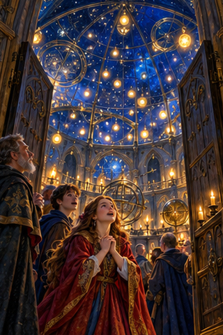
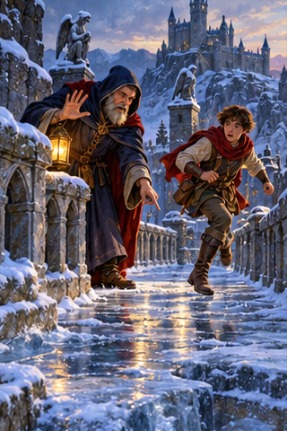
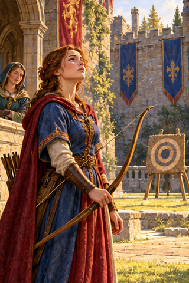
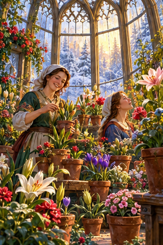
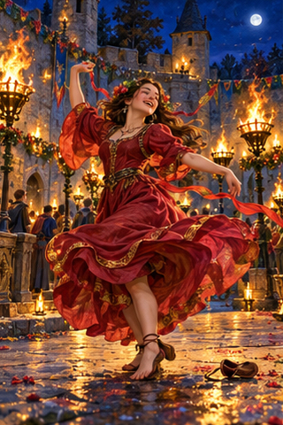
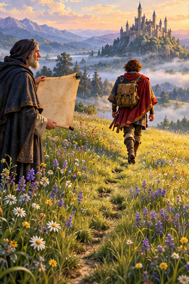
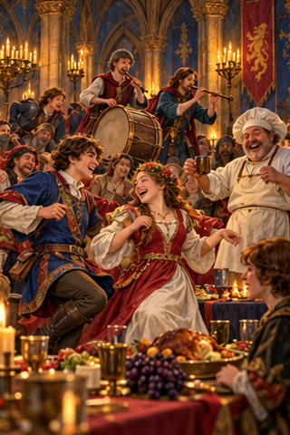
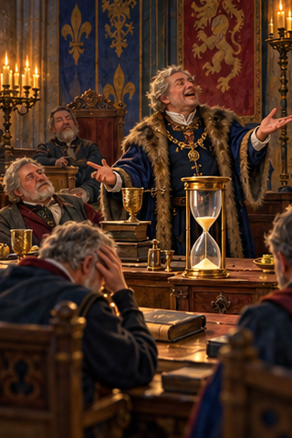
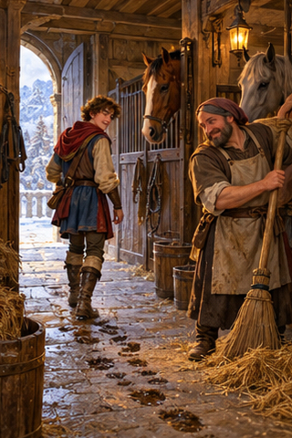

PDD Batch 08 — review only
Ten 320×480 portraits, in manifest order. Not installed.
Original composite
1. PDD 94 — Asombrar
pdd94.jpg
2. PDD 95 — Más te vale
pdd95.jpg
3. PDD 96 — Alzar la cabeza
pdd96.jpg
4. PDD 97 — Flores que nunca se detienen
pdd97.jpg5. PDD 98 — Sé el cambio que quieres ver en el universo
pdd98.jpg
6. PDD 99 — Que me quiten lo bailado
pdd99.jpg
7. PDD 100 — Caminante, no hay camino, se hace camino al andar
pdd100.jpg
8. PDD 101 — Jolgorio
pdd101.jpg
9. PDD 102 — Estirar el chicle
pdd102.jpg
10. PDD 103 — Hacer / Hacerse la vista gorda
pdd103.jpg